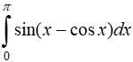
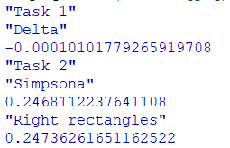

Задача 9.1
Знайти корені нелінійного рівняння виду 2x - cos(x) = 0. Пошук наближеного значення хоча б одного кореня рівняння f(x) = 0 на відрізку [a; b] здійснювати методами простої ітерації та дотичних. Значення a, b інтервалу вибрати самостійно. Порівняти результати розв’язків двома методами.
Задача 9.2
Написати процедури для обчислити інтеграла за формулами правих прямокутників і Сімпсона. Порівняти результати обчислення.
Racket — мова програмування загального призначення, що базується на мові Scheme і належить до сімейства мов Lisp. Хоча Racket бере за основу мову Scheme і підтримує виконання програм R5RS та R6RS Scheme, мова Racket має свої розширення і відмінності і підтримує різні парадигми програмування. Однією з особливостей Racket є можливість створення на її основі спеціалізованих мов зі своїм спеціалізованим синтаксисом без потреби використання якихось зовнішніх інструментів на кшталт препроцесорів. Також мова має систему модулів та можливість об'єктно-орієнтованого програмування.
Код програми
#lang racket
;----------------Task 1--------------
"Task 1"
(define (abs x)
(if (positive? x )
x
(- x)))
(define (close-enough? x y)
(< (abs (- x y)) 0.001))
(define (funcd x)
(+ 2 (sin x))
)
(define (func x)
(- (* 2 x) (cos x))
)
(define (newton x)
(let ((res (- x (/ (func x) (funcd x)))))
(if (close-enough? res x)
res
(newton res)
)
)
)
(define (simple-i x)
(let ((res (- x (* 0.3519 (func x)))))
(if (close-enough? res x)
res
(simple-i res)
)
)
)
"Delta"
(- (newton 1) (simple-i 1))
;-------------------Task 2-------------
"Task 2"
(define (func2 x)
(sin (- x (cos x)))
)
"Simpsona"
(+ ((lambda (x h) (* (/ h 3) (+ (func2 x) (* 4 (func2 (+ x h))) (func2 (+ x (* 2 h))))))0 (/ pi 4))
((lambda (x h) (* (/ h 3) (+ (func2 x) (* 4 (func2 (+ x h))) (func2 (+ x (* 2 h))))))(/ pi 2) (/ pi 4))
)
"Right rectangles"
(* (/ pi 4) (+ (func2 (/ pi 4))(func2 (/ pi 2))(func2 (/ (* 3 pi) 4))(func2 pi)))
Результати роботи програми
Github link
Висновок
Після проведеної роботи було реалізовано дві програми. Одна знаходить дельту між коренями рівнянь розрахованими за допомогою методів простої ітерації та дотичних. Метод дотичних був простіший в реалізації та потребує менше приготувань. Друга програма обчислює інтеграл методом Сімпсона та правих прямокутників.